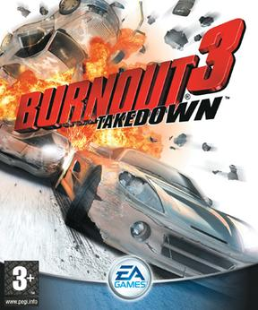

Burnout 3
Burnout 3: Takedown is a 2004 racing video game developed by Criterion Games and published by Electronic Arts. It is the third instalment in the Burnout series, which is characterised by fast-paced arcade racing. A staple of the series is the use of boost, earned through risky driving, to rapidly increase a car's speed. The central mechanic introduced in Burnout 3 is Takedowns, which allow players to slam their opponents until they crash. Takedowns work in conjunction with the boost system by filling up and extending the boost meter. Aside from standard circuit races, the game features modes focused on performing Takedowns on rival vehicles and causing monetary damage at a junction occupied with traffic. Each game variant is featured in a single-player campaign mode called World Tour, which serves as the primary method for unlocking new and faster cars. The game supports both online and split-screen multiplayer
